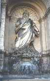
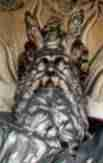
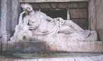
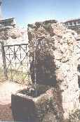
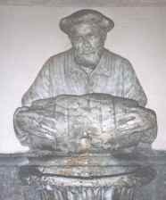

Roma ofrece al visitante inumerables fuentes de agua potable, alimentadas desde hace más de 2000 años
gracias a la obra de ingeniería
más característica de los romanos, los acueductos. Las fuentes más conocidas son naturalmente la Fontana
di
Trevi y
la Fuente de los Cuatro Ríos de la Plaza Navona. En esta página se ofrecen imágenes de cuatro fuentes
menos
conocidas.

Fontana dell'Acqua Felice
Esta fuente está alimentada por un acueducto construido por Sixto V (1585-1590). Sixto V se llamaba
en
realidad
Felice Peretti, de ahí el nombre de la estatua. La figura central representa a Moisés y las malas
lenguas
dicen que
el escultor intentó emular el Moisés de Miguel Ángel, pero que al ver el resultado se murió de la
decepción..

Incrocio delle Quattro Fontane (Diana)
El Papa Sixto V (1585-1590) transformó la ciudad con la construcción de calles grandes y rectas para
enlazar
directamente los principales barrios y basílicas. En el cruce de dos de estas calles (la calle que
une
Santa
Maria
Maggiore con la Iglesia de la Trinità dei Monti y la calle que une el Quirinal con la Porta Pia),
unos
vecinos
instalaron en el siglo XVI en las esquinas cuatro fuentes que representan al Nilo, al Tíber, a Juno
y a
Diana.


Foro romano
Esta modesta fuente se encuentra situada en uno de los lugares con más historia de la Tierra: el
Foro
Romano, a
medio camino entre la Curia, donde se reunía el Senado, y el Tabularium, donde se almacenaba el
archivo
del
estado.
A pocos metros se encuentra el Umbilicus Urbis, el centro de una ciudad que fue a su vez el centro
del
mundo.

Fontanella del Facchino
Si todos los caminos llevan a Roma es gracias a las vias que construyeron los romanos, enlazando su
ciudad
con todo
el Imperio. La Via Flaminia, construida en el 200 a.C. por el cónsul Flaminio, llegaba hasta el mar
Adriático en una
línea casi recta de más de 300 km. Una vez dentro de la ciudad, desde la Plaza del Popolo hasta la
Plaza
Venecia, la
Via Flaminia recibe el nombre de Via del Corso. Esta simpática fuente se encuentra en la Via Lata,
una
pequeña
travesía de la Via del Corso. El tonelero ofrece 24 horas al día agua fresca al cansado caminante.